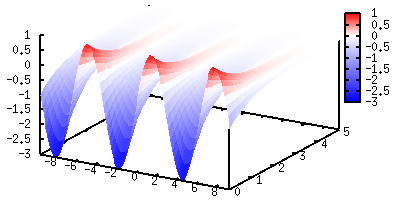
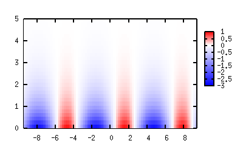
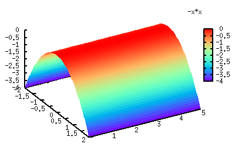
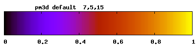
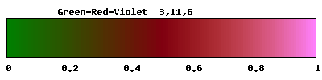
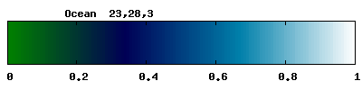
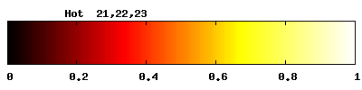
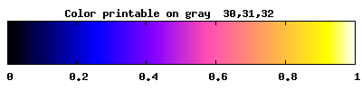
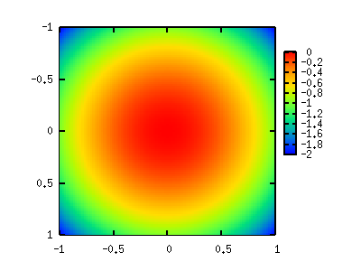

- not so Frequently Asked Questions -
update 2006/04/18
|
|
- not so Frequently Asked Questions - update 2006/04/18
|
|
not so FAQ
|
3-Dim Plot with a Color-Map (pm3d)How can I change the colors in a 3D figure ?[ver.4] ONLY ! As a default, pm3d uses a color map which varies from black to yellow via blue and red. To change this color gradient, use the set palette command. You need to add some options to control the color map. Suppose we have a function (or data) whose Z values vary from -3 to 1. f(x,y) = (2*sin(x)-1)*exp(-y) is such a function. Now we want to use red for the maximum value (Z=1), blue for the minimum value (Z=-3), and do not want to use any colors at Z=0. gnuplot> set ticslevel 0 gnuplot> set pm3d gnuplot> set palette defined (-3 "blue", 0 "white", 1 "red") gnuplot> splot (2*sin(x)-1)*exp(-y) with pm3d 
The option defined is used here. The followed numbers/values are some Z values and colors there. Pm3d interpolates colors in between two defined Z points. In the example above, the color changes from blue to white in the Z=-3 to 0 range. In this example, the color for Z=0 is the same as the background color which is white. Such a color-mapping might be useful when you want to dim some area where your data are less important. For example, you have a 2-dimensional density distribution, you may want to exclude some area in which the density is zero. This can be understood with the example above if we project the 3D data onto 2D plane. The negative area is shown by blue, positive is red, and the other area looks empty. gnuplot> set pm3d map gnuplot> replot 
 Another method to change colors is to use the option of rgbformulae , followed by three intergers. Those numbers are used for three colors -- Red(R)/Green(G)/Blue(B), and each number is an index of some built-in functions. For example rgbformulae 0,0,3 means, gnuplot does not use Red and Green, but the height of Z values is expressed by a linear color variation from black to blue. There are 37 functions to change the color, which have an index from zero to 36. The function index 3, which was used in the example above, is a simple linear function. Default color setting of gnuplot is 7,5,15 where the function number 7 is sqrt(x), 5 is x^5, and 15 is sin(360x). The defined functions with those indices you can see by show palette rgbformurae . In general, to obtain a suitable color palette with the palette rgbformulae command is hard. However, the help palette rgbformulae command may give you some hints. For example, a combination of 33,13,10 is a "rainbow", which is like this. gnuplot> set palette rgbformulae 33,13,10 gnuplot> splot -x*x with pm3d 
Other colorings gnuplot help recommends are as follows:

    Now we got another "rainbow" gnuplot> set pm3d map gnuplot> set size square gnuplot> set palette rgbformulae 22,13,-31 gnuplot> splot -(x*x+y*y) 
from Martin in Czech Republic. Thanks !
|